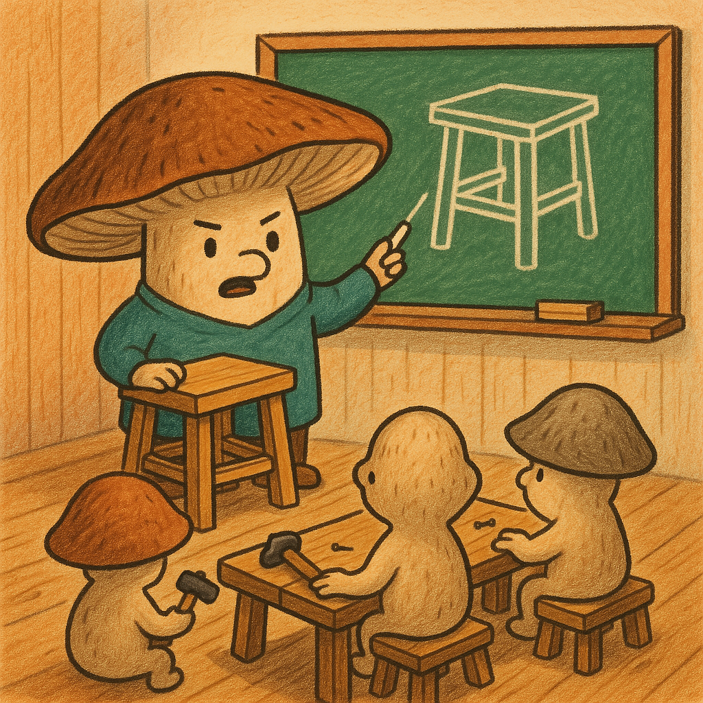
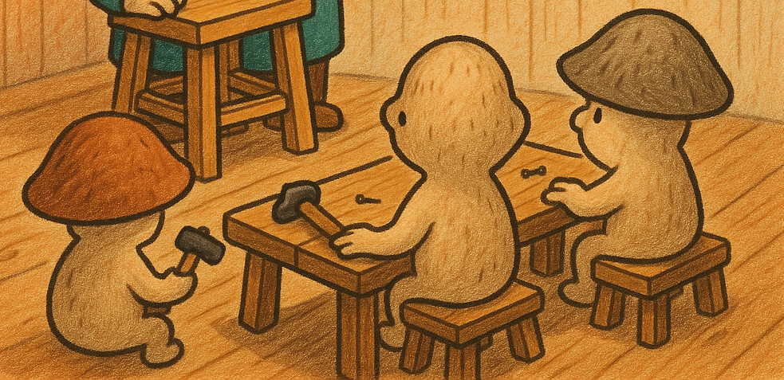

Студенческая жизнь
На факультете активно развиваются научные кружки, спортивные секции и культурные мероприятия.
Научная деятельность
Студенты участвуют в конференциях, олимпиадах и проектах по прикладной математике.
Традиции
Каждый год проводится посвящение первокурсников и фестиваль студенческих талантов.
Ваши заметки
Здесь можно редактировать текст, добавлять свои мысли о факультете.
Цитата
Gaudeamus igitur, juvenes dum sumus!
Пример кавычек
«Это пример текста, внутри которого есть "другая цитата".»
Фото учебной группы
Навигационная карта
Подсказка: наведите на товарища и кликните для перехода на страницу.